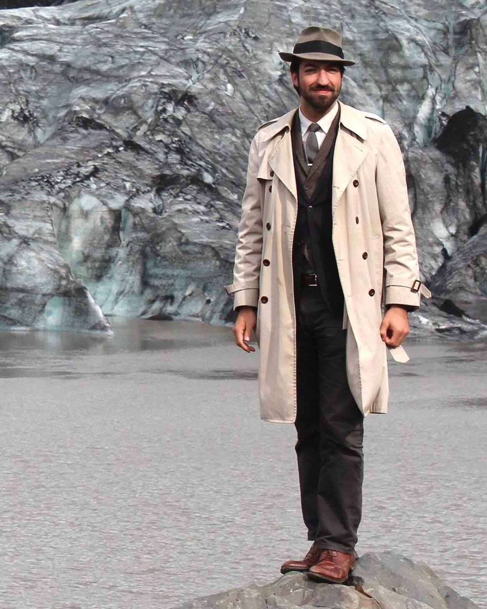
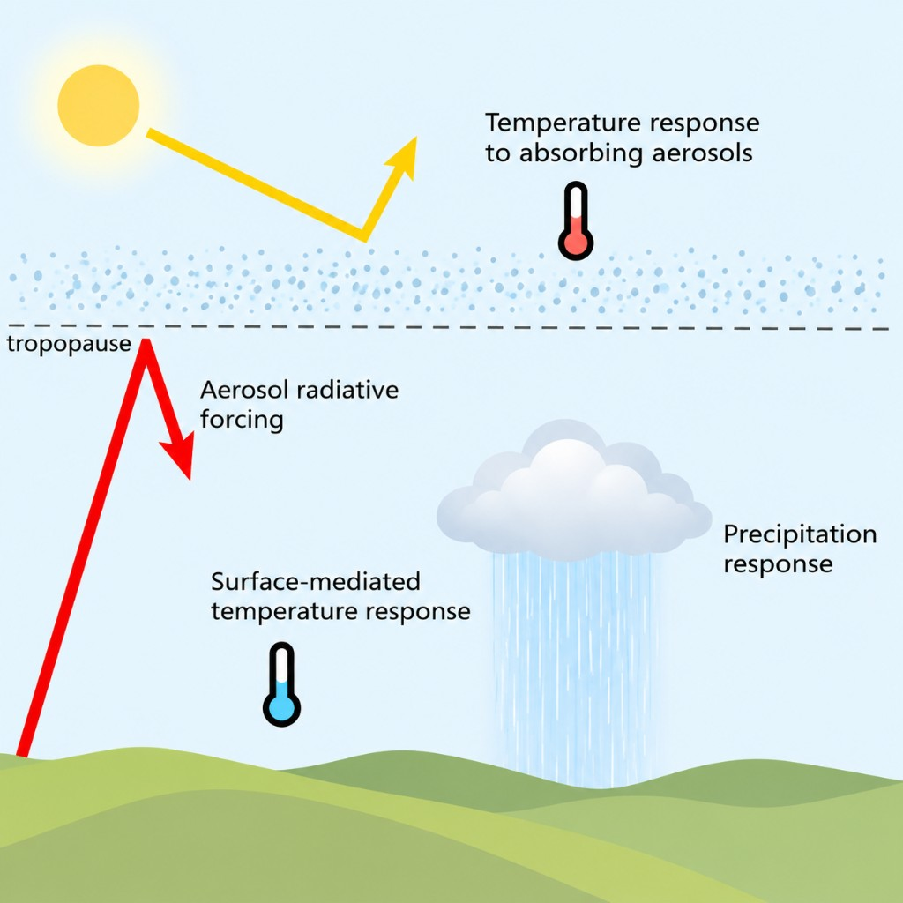
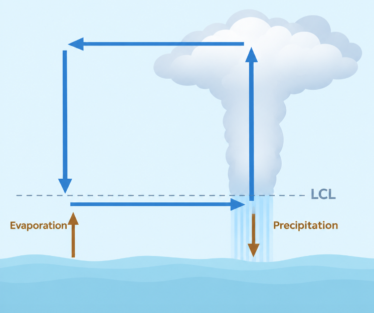

01
Ice clouds and climate
How do dust, soot, and other airborne particles that help ice form affect clouds and climate?
Explore the workAtmospheric science · Climate physics
I use physical reasoning, theory, and a hierarchy of models to test how the atmosphere works—and to find where accepted explanations and model behavior break down.
Postdoctoral researcher · Climate Dynamics group · University of Vienna

Research program
My work follows how microscopic aerosol and cloud processes propagate to radiation, convection, precipitation, circulation, and surface temperature. The goal is not only better simulations, but more reliable physical explanations.
How do dust, soot, and other airborne particles that help ice form affect clouds and climate?
Explore the workHow do particles high in the atmosphere alter heat, rainfall, and temperature—and when do models exaggerate the response?
Explore the workDo long-standing predictions of weaker tropical rising air and fewer high storm clouds follow from real mechanisms or flawed reasoning?
Explore the workHow can we tell when a model result reflects atmospheric physics, a modeling choice, or the way a question is framed?
See the approach
Aerosol absorption, surface cooling, and cloud processes alter the atmospheric energy budget and precipitation.
Featured question
Volcanic aerosols change how the atmosphere gains and loses heat. My work uses computer simulations and physical reasoning to explain how these changes affect precipitation. Understanding these processes is important for evaluating how volcanic eruptions may have affected people and societies in the past, how future eruptions could affect populations, and the risks of deliberate climate interventions.
Read the related publicationsTropical climate change
I use theory and high-resolution models to test which hypothesized responses reflect real atmospheric mechanisms.
Read the related preprints
A schematic of the energetic and convective pathways that connect surface fluxes, clouds, precipitation, and atmospheric transport.
Research approach
Understand a standard argument deeply enough to identify its limits, unresolved assumptions, and consequences for the questions we care about.
Connect small-scale aerosol processes to clouds, rising air, and climate while testing how model detail and assumptions shape the processes they represent.
Use equations as a guide to physical intuition, asking what each process means for the atmosphere and climate.
What comes next
Build analytical foundations for predicting tropical and extratropical responses to aerosol perturbations.
Use kilometer-scale models to investigate aerosol impacts on weather systems and climates.
Evaluate deliberate climate interventions with models that make their effects on sunlight and heat, particles, and atmospheric motion traceable.
Selected first-author work
arXiv · Read preprint
arXiv · Read preprint
Journal of Climate · DOI
Geophysical Research Letters · DOI
Geophysical Research Letters · DOI
Journal of Climate · DOI
Geophysical Research Letters · DOI
Geophysical Research Letters · DOI
Journal of Geophysical Research: Atmospheres · DOI
In the news